Sparklines
An art exhibition featuring a coffee maker computer and hand drawn data visualizations by Doug MacDowell artist
Date: April 18 to 20, 2025
Location: Majestic Galleries in Nelsonville, Ohio
Sparklines was an exhibition featuring hand drafted data visualizations like ones made by William Playfair or W.E.B Dubois in the 1700's and 1800's. The visualizations orbit a coffee maker computer I built and named Coffeematic PC. Coffeematic PC is part of a lineage of coffee maker computers. By focusing on this unique lineage of coffee maker computers along with public datasets, Sparklines presents data portraits and landscapes to contextualize a subversive group I call artist/hackers.


 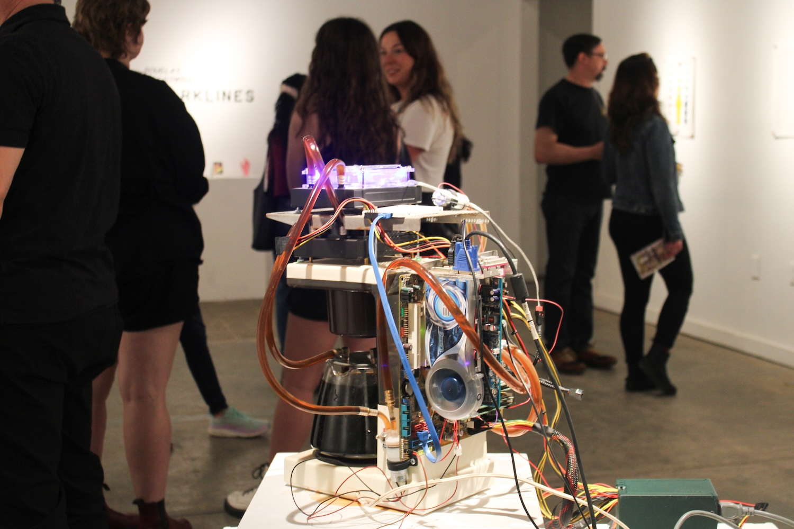
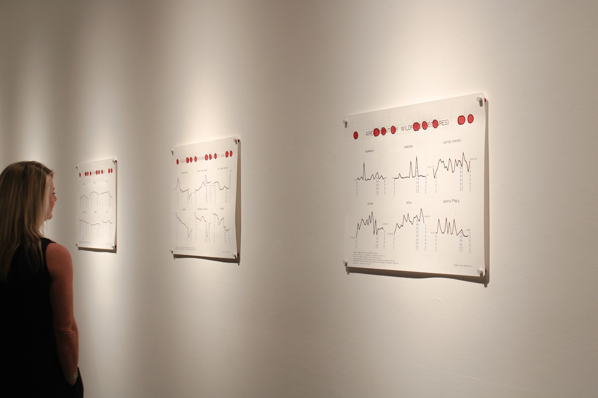
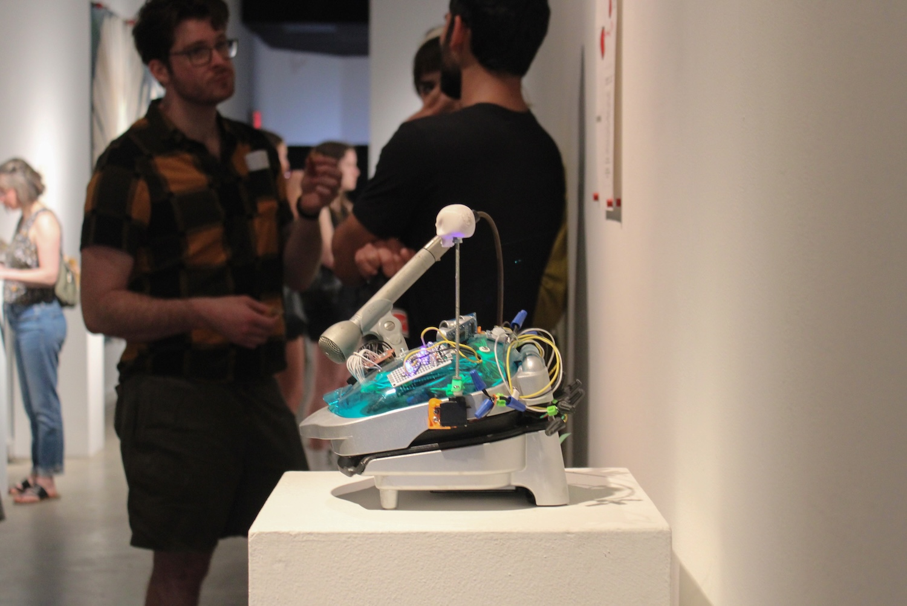
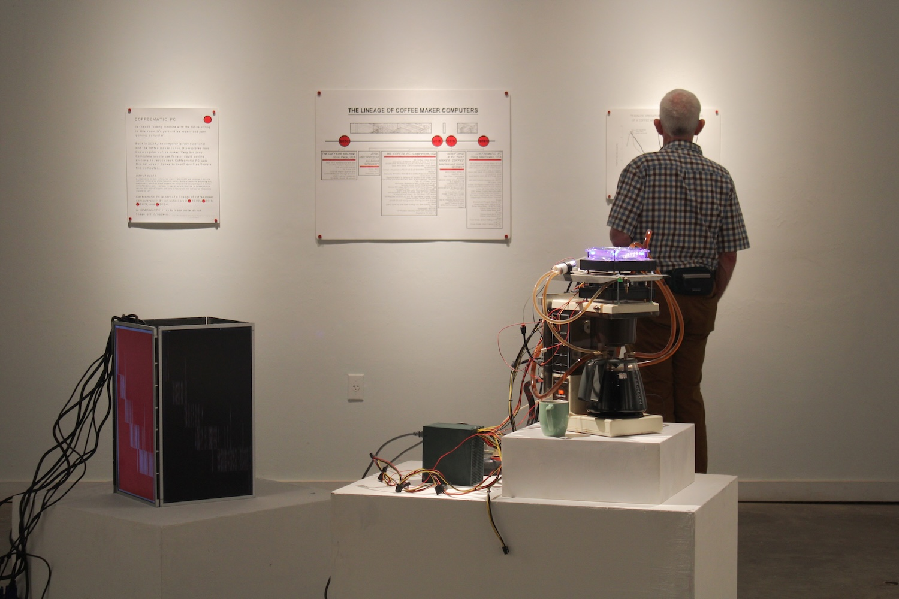
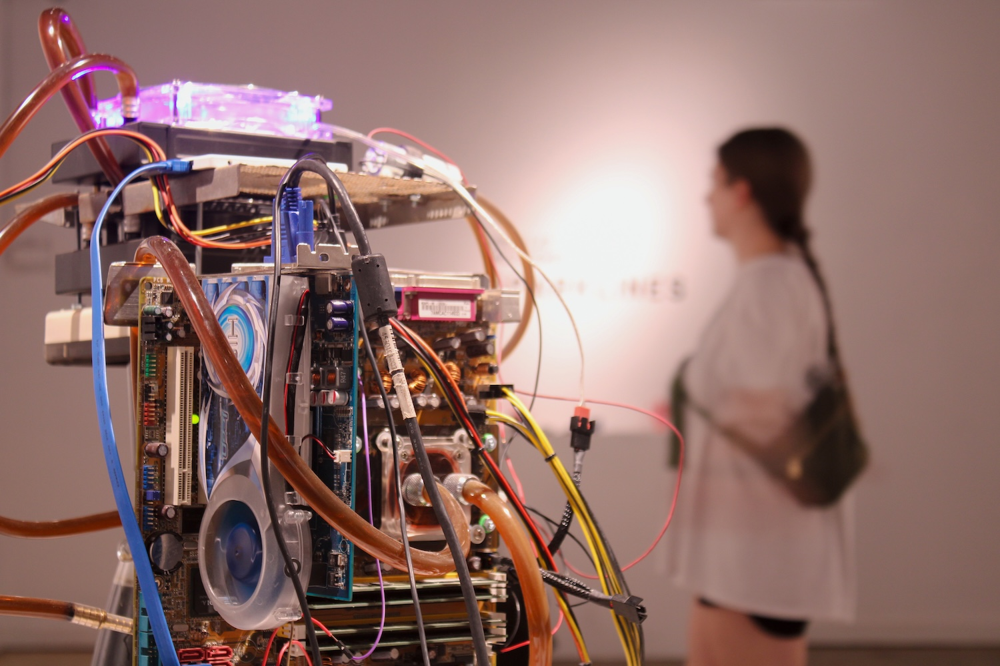
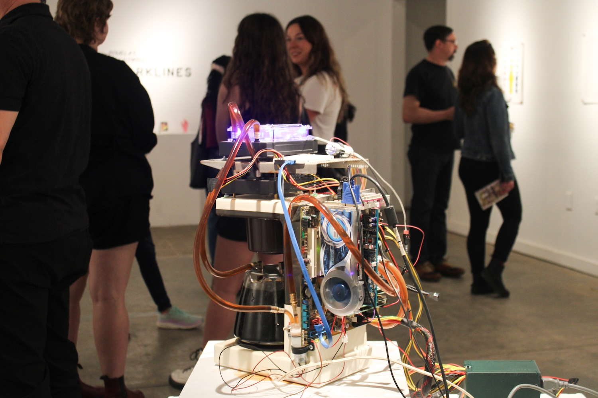
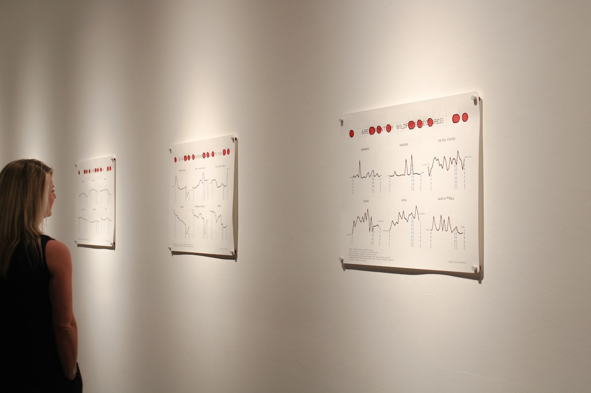
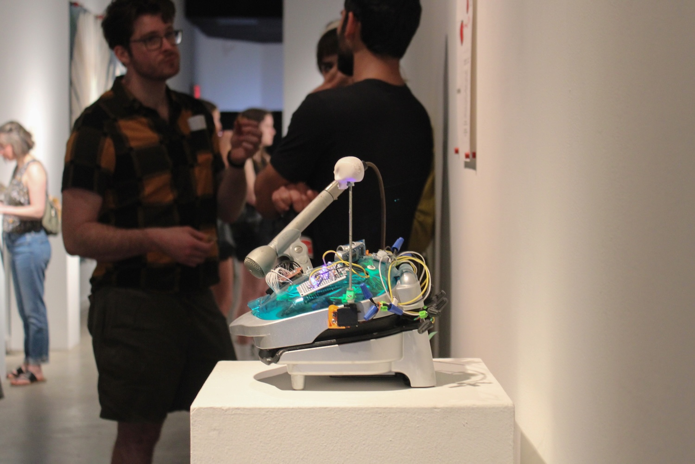
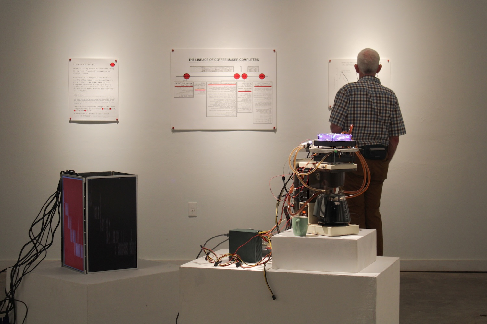
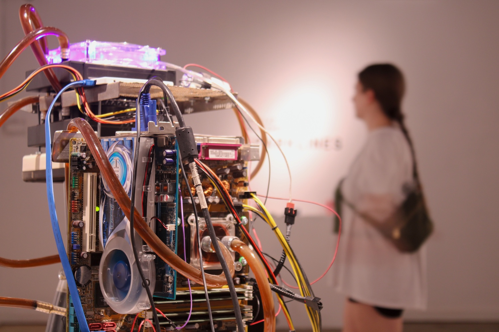
Photography by my lovely fiancée :)
 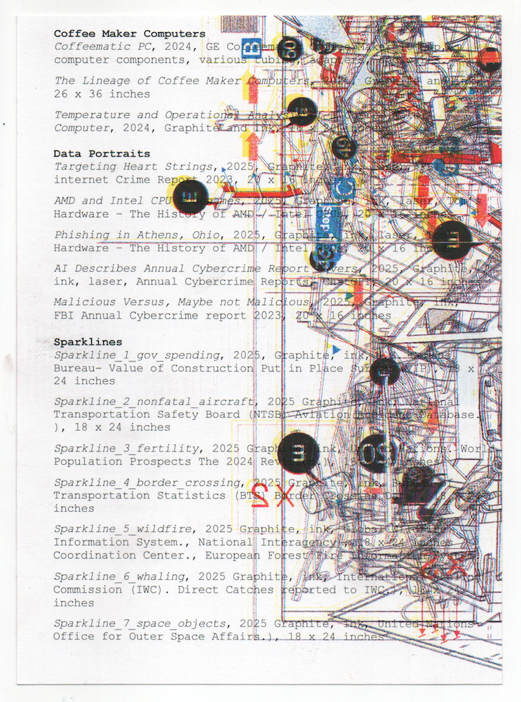
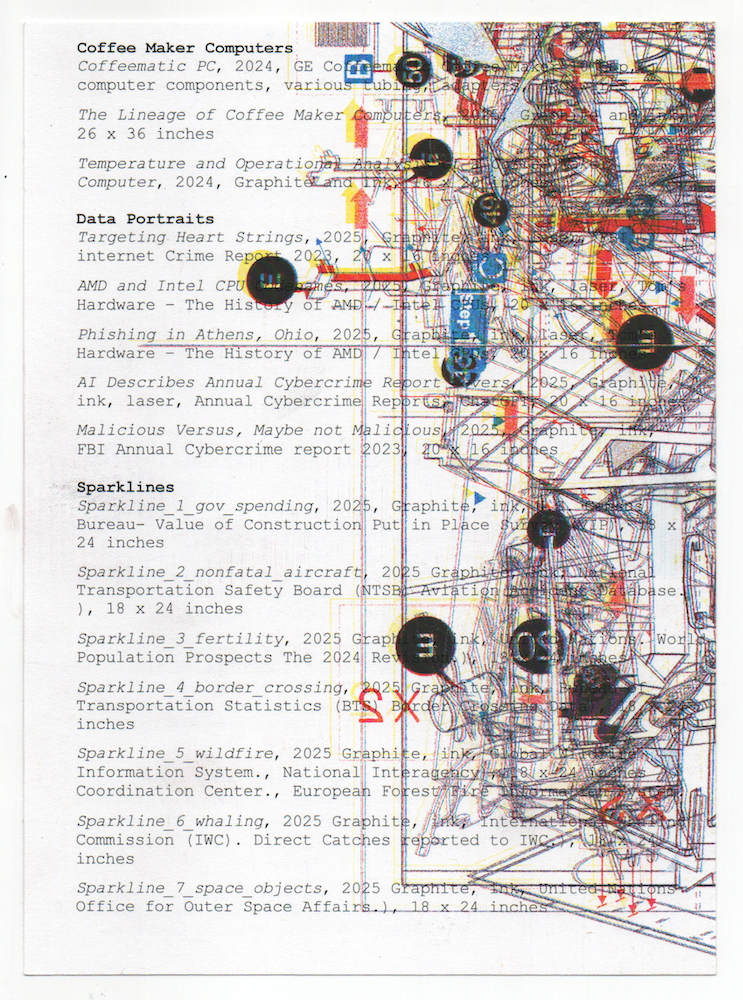
You can find the 3.5 hour playlist, curated by my lovely fiancée and
played at the reception
here.
You can see the work in the show in more detail using the links below.
Data Landscapes (Sparklines)
Data Portraits (Sparklines)
The Lineage of Coffee Maker Computers
Coffeematic PC